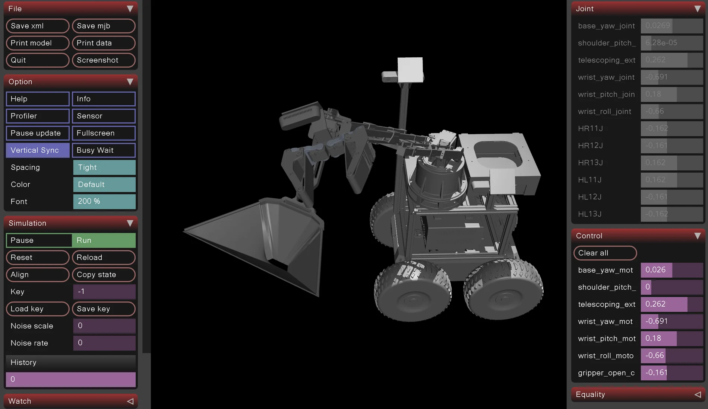
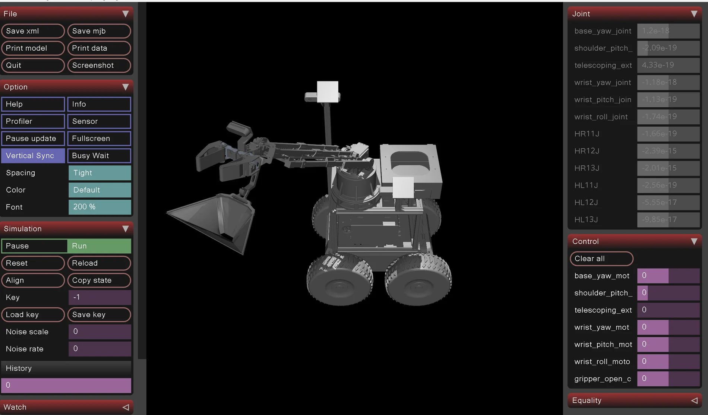

Georgia Tech collaborative robotics project · June 2026–present
Berry-Harvesting Robot Simulation
Simulation-model reconstruction for an existing harvesting platform. The work converts inherited CAD and URDF assets into a structured MuJoCo model suitable for repeatable control and future manipulation experiments.
- Contribution
- Simulation asset and model integration
- Input
- CAD · URDF · 100+ STL components
- Output
- Articulated MuJoCo model
- Status
- Simulation infrastructure

Implemented work
- Processed and organized more than 100 mesh components from the existing mechanical platform.
- Rebuilt link hierarchy and corrected mesh orientation, origins, coordinate frames, joint axes, and parent–child relationships.
- Configured actuator mappings, joint ranges, gripper behavior, scene objects, and simplified collision behavior.
- Diagnosed unstable dynamics, constraint conflicts, and control-range errors during model bring-up.
Why this matters
A visually correct import can still have incorrect kinematics or unstable dynamics. Separating mesh transforms from joint transforms and validating one articulated group at a time produced a more reliable base model for later perception, planning, control, or learning experiments.
Current boundary: this project demonstrates model and simulation integration. It does not claim a completed path-planning or learning system.
Evidence
Model states
The browser viewer exposes the main articulated axes and gripper controls without requiring a local CAD installation.



Next / P-03